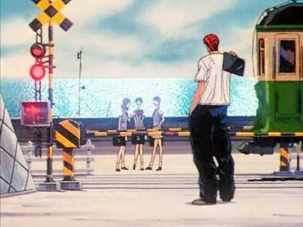

sanctuary
神奈川県立鎌倉高等学校

湘北が最初に対戦した仙道、魚住擁するライバル陵南のモデルは、神奈川県立鎌倉高等学校です。
魚住が田岡先生にしごかれて、もうやめますと言っているときにこの高校の体育館が出てきますね。
鎌倉高校は神奈川県の有数な進学校なのですが、あまりにもロケ―ションが良すぎて勉強する気にならないという「鎌ボケ」という言葉が存在するそうです。 それもそのはず、鎌倉高校はアニメ「スラムダンク」のオープニングに出てくる鎌倉高校前踏切のすぐ近くにありますから。